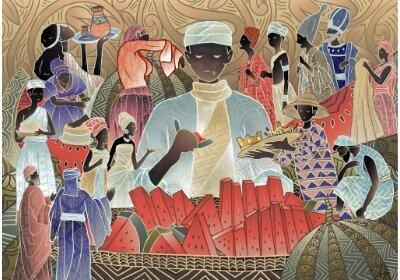

The Despising King

Once upon a time, there was a King who ruled the land of Okaigo.
The King had a kind heart and his people loved him.
The King would seek advice in every matter
that required his attention from his Council of Chiefs,
despite his age and position. With the advice he received,
he was able to rule his people peacefully for many years.
One day, the King fell sick and the heir apparent, his eldest son,
was told to perform some ritual before the second cockcrow to save his father’s life.
The young man agreed, but before sunset, he went to his concubine’s house
in the next village and slept till the following morning.
He could not perform the ritual and, on his return, he met people crying in the palace.
The elders were not happy about what he did, as a result,
the elders decided to suspend his coronation and asked him to pay a fine
before his father would be buried. He paid the fine and his father was buried.
As the heir apparent, he took over his father’s throne,
pending when the Council of Chiefs would crown him. The heir apparent began to rule,
but he did not take any advice from the Council of Chiefs.
Even when the elders deliberately advised him, he would not take it.
He was very much unlike his father.
He did what was right in his own eyes and not what would benefit the people.
One day, the Council of Chiefs decided to crown him as a result of the pressure and
threat he put on them through the palace guard. This made the entire town of Okaigo all agog.
The elders and people were gathered at the Market Square,
which was the usual venue for the final celebration for past Kings.
The chiefs and the family in charge of the coronation went to the palace to dress the King
for the coronation. During this period,
the King was not expected to take breakfast but dinner after the coronation.
But Ologhe, the heir apparent, insisted that he must eat the delicious red melon prepared by his wife.
All attempts by the chiefs, elders, wives and friends advising him against eating the food did not succeed.
Eventually, he ate the food and a fragment of it hanged on his moustache.
It was very visible because the color of the fragment of the melon was red and the King did not know;
neither did anybody tell him because he had not taken to previous advice.
The King was crowned in the palace, and it was time for him to dance with his family, chiefs,
elders and friends who accompanied him to the Market Square for the final celebration.
Unknown to him, the fragment of red melon was still conspicuously hanging on his moustache.
s the dance progressed, the drummer saw the fragment of the red melon on the King’s moustache
and translated it through his talking drum thus:The King who does not listen to advice,
There is a fragment of red melon in your moustache.
The King immediately touched his moustache and the red melon fragment soiled his hand,
which made him angry. After the celebration, the King summoned his chiefs, elders, wives and friends.
He asked them why they did not tell him that there was a fragment of red melon in his moustache.
They all responded with one voice, that because he had never listened to any advice or correction,
they could not tell him. The King was sorry for his past disobedience to his people’s advice and
he promised to take corrections, suggestions and advice in the future.